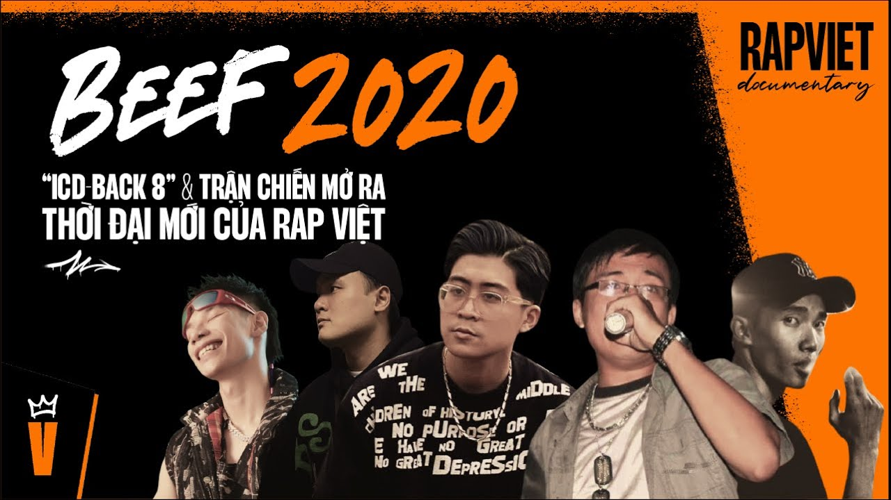
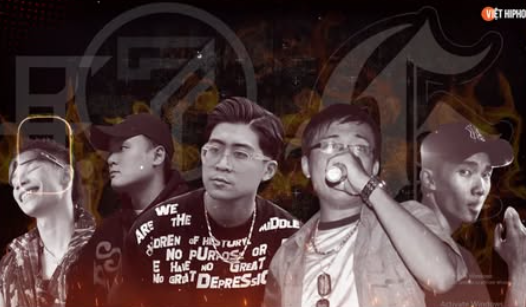

TRẬN BEEF NAM BẮC 2020
BEEF 2020
- Tổng quan.
Beef 2020 được khơi mào bởi bài “Back 8 Kamikaze” của ICD, một lyrical rapper đến từ Hải Phòng. Bài rap này không chỉ là một bản diss thông thường, mà là một tuyên ngôn nghệ thuật mang tính tổng lực, công kích hàng loạt rapper có tiếng trong cộng đồng rap Việt. Từ đó, hàng loạt phản hồi được tung ra, tạo nên một trận chiến âm nhạc quy mô lớn, kéo dài nhiều tháng và thu hút sự chú ý của cả cộng đồng hiphop lẫn truyền thông đại chúng.
- Nguyên nhân và bối cảnh hình thành
Di sản từ các cuộc beef trước
Trước 2020, rap Việt đã trải qua các cuộc beef lớn: 2013, 2016, và 2018, mỗi cuộc đều để lại dấu ấn riêng về kỹ thuật, tư tưởng và văn hóa.
Tuy nhiên, chưa có cuộc beef nào thực sự tạo ra sự chuyển mình toàn diện như Beef 2020.
Sự trỗi dậy của thế hệ mới
Miền Bắc chứng kiến sự phục hưng mạnh mẽ với các tổ chức như RVP, GVA, cùng các rapper trẻ như ICD, Freaky, Magazine, MCK, Origin, Ramastic, v.v.
Miền Nam vẫn duy trì sức ảnh hưởng với các tổ chức như G-Family, OTD, G5R, nhưng bắt đầu xuất hiện dấu hiệu bảo thủ và chậm thích nghi.
ICD và “Back 8 Kamikaze”
ICD tung bài “Back 8 Kamikaze” vào ngày 15/5/2020, gọi tên hàng loạt rapper như Dmaniac, Suboi, Rick Choi, G-Family, Tổ Quạ, v.v.
Bài rap mang phong cách công kích trực diện, sử dụng hình ảnh “Kamikaze” như một biểu tượng cho sự cảm tử nghệ thuật.
- Diễn biến cuộc beef
Phản hồi từ miền Nam
B2C (G-Family) tung bài “The Chosen One”, công kích toàn bộ rap miền Bắc, gọi 7LD là “bảy thằng liệt dương”.
SolBass tiếp tục với “Không Tên Số 1”, nối dài mâu thuẫn.
Phản công từ miền Bắc
Các rapper trẻ miền Bắc như Freaky, Gothic, Phúc XP, Zugi, Master Trippy, Magazine, Min Sầu, v.v. tung hàng loạt bài diss như:
- “Thuốc Diệt Cỏ” – Freaky DI
- “Nghênh Chiến” – Gothic
- “Mảnh Hổ Xuất Sơn” – KILLIC
- “SBB Cipher” – Minh Sầu x Kuzz X Cuội
- “Vỗ Tay Theo Nhịp” – Zugi & Trippy
- ...
Cao trào: “Cấm Nghe” và “Rap Chậm Thôi”
ACY (G-Family) tung bài “Cấm Nghe” dài gần 19 phút, mang tính triết lý, lịch sử, và nghệ thuật cao, được xem là “trùm cuối” của miền Nam.
Rapital (MCK, Origin, Mas) đáp trả bằng “Rap Chậm Thôi”, một bản diss hài hước, châm biếm, viral mạnh mẽ với hơn 14 triệu lượt xem dù để chế độ không công khai.
Các gương mặt tham gia beef
- Tác động và di sản
Thay đổi tư duy diss track
“Rap Chậm Thôi” mở ra một trường phái mới: diss bằng hài hước, bắt tai, dễ viral thay vì kỹ thuật nặng.
Tạo tiền đề cho các sản phẩm rap đại chúng sau này.
Thương mại hóa rap Việt
Sau cuộc beef, các rapper miền Bắc như ICD, MCK, Rapital xuất hiện trong các chương trình lớn như King of Rap, Rap Việt, đạt thành tích cao.
Rap Việt bước vào thời kỳ thương mại hóa, hợp tác với nhãn hàng, xuất hiện trên truyền hình, sân khấu lớn.
Phân chia quyền lực mới
Thế hệ trẻ miền Bắc khẳng định vị thế, OG miền Nam dần ít can thiệp vào cộng đồng.
Các tổ chức như RVP, Rapital, GVA trở thành trung tâm mới của cộng đồng hiphop.
- Bài học rút ra
Diss không chỉ là công kích, mà là cách thể hiện tư duy, bản lĩnh và định hướng nghệ thuật.
Sự khác biệt vùng miền là điều tất yếu, nhưng cần được tôn trọng và khai thác để phát triển cộng đồng.
Rap Việt đã bước sang thời kỳ mới, nơi kỹ thuật, thông điệp, cá tính và khả năng thương mại hóa đều quan trọng.